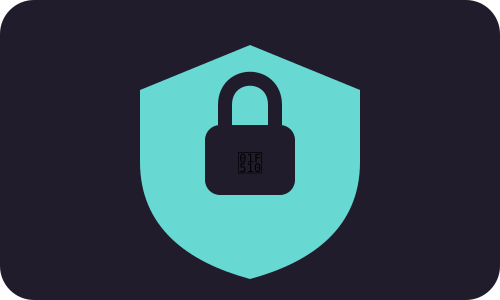

MODULE 04 · 08
🔐 Redes

SUBSECCIÓN
Cuida tu información
La privacidad forma parte del bienestar digital. Antes de compartir información, revisa quién puede verla, qué datos contiene y si realmente necesitas publicarla.
Fuente / respaldo
UNESCO (2023), Technology in education: privacy and safety considerations.
UNESCO (2023), Technology in education: privacy and safety considerations.